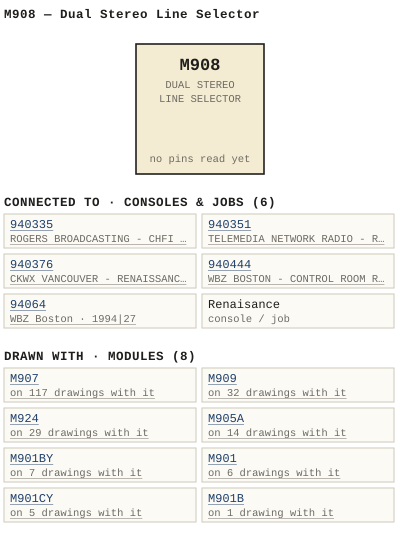

M908 — Dual Stereo Line Selector
| Type | module |
| Category | UNSORTED |
| Try it | simulator & front panel · download package (zip) |
| Earliest dated evidence | 1994|27 — original file date |
| Evidence | saved 1994-01-06: WBSps Engineering from H drive-20261018T013433Z-1-001/WBSps Engineering from H drive/WBSps - FA93001/M908.DWG |
| Confidence | medium |
| All years found | 1994|27 |
| Used in jobs | 940376 (1994|27), 940351 (1994|27), 94064 (1994|27), 940335 (1994|27), 940444 (1994|27), Renaisance |
| Folder | Consoles/1990-1999/930351 |
| Folder | Consoles/1990-1999/940332 |
| Folder | Consoles/1990-1999/940334 |
Connections
What it is made of and what it is part of.
Pictures


M908.connections.svg 1993 - 930351 - DOC - Scan_20210323.jpg
1993 - 930351 - DOC - Scan_20210323.jpg 1994 - 940332 - DOC - 940332-01-001 - TORPEY TIME CLOCK COMPLETE.jpg
1994 - 940332 - DOC - 940332-01-001 - TORPEY TIME CLOCK COMPLETE.jpg 1994 - 940334 - DOC - 940334-01-001 - ARE INTEGRATED INTO CONSOLE TORPEY TIME CLOCK COMPLETE.jpg
1994 - 940334 - DOC - 940334-01-001 - ARE INTEGRATED INTO CONSOLE TORPEY TIME CLOCK COMPLETE.jpg 1994 - 940335 - DOC - 940335-01-001 - NEL ARE INTEGRATED INTO CONSOLE TORPEY TIME CLOCK.jpg
1994 - 940335 - DOC - 940335-01-001 - NEL ARE INTEGRATED INTO CONSOLE TORPEY TIME CLOCK.jpg 1994 - 940350 - DOC - Scan_20210323.jpg
1994 - 940350 - DOC - Scan_20210323.jpg 1994 - 940376 - DOC - 940376-04-001 - LES ARE FULLY WIRED BUT NOT SUPPLIED INITIALLY.jpg
1994 - 940376 - DOC - 940376-04-001 - LES ARE FULLY WIRED BUT NOT SUPPLIED INITIALLY.jpg 1994 - 940410 - DOC - 2021-3-16-22-57-52.jpg
1994 - 940410 - DOC - 2021-3-16-22-57-52.jpg 1994 - 940410 - DOC - 940410-04-001 - FUTURE MODULES ARE FULLY WRED BUT NOT SUPPLIED.jpg
1994 - 940410 - DOC - 940410-04-001 - FUTURE MODULES ARE FULLY WRED BUT NOT SUPPLIED.jpg 1994 - 940444 - DOC - 940444-04-001 - OTHERS ELECTRICALLY AND MECHANICALLY INTEGRATED INTO CONSOLE.jpg
1994 - 940444 - DOC - 940444-04-001 - OTHERS ELECTRICALLY AND MECHANICALLY INTEGRATED INTO CONSOLE.jpg 1994 - 940446 - DOC - 940446-01-001 - CALLY INTEGRATED INTO THE CONSOLE.jpg
1994 - 940446 - DOC - 940446-01-001 - CALLY INTEGRATED INTO THE CONSOLE.jpg 1994 - 940446 - DOC - 940446-04-001 - OTHERS ELECTRICALLY AND MECHANICALLY INTEGRATED INTO CONSOLE.jpg
1994 - 940446 - DOC - 940446-04-001 - OTHERS ELECTRICALLY AND MECHANICALLY INTEGRATED INTO CONSOLE.jpg 1994 - 940447 - DOC - 940447-04-002 - OTHERS ELECTRICALLY AND MECHANICALLY INTEGRATED INTO CONSOLE.jpg
1994 - 940447 - DOC - 940447-04-002 - OTHERS ELECTRICALLY AND MECHANICALLY INTEGRATED INTO CONSOLE.jpg 1994 - 940448 - DOC - 940448-04-002 - ODULES ARE WIRED BUT NOT SUPPLIIED INITIALLY FUTURE.jpg
1994 - 940448 - DOC - 940448-04-002 - ODULES ARE WIRED BUT NOT SUPPLIIED INITIALLY FUTURE.jpg 1994 - 94054 - DOC - 94054-04-001 - CHNOM KOP TCNALI SSUEI REVSION.jpg
1994 - 94054 - DOC - 94054-04-001 - CHNOM KOP TCNALI SSUEI REVSION.jpg 1994 - 94064 - DOC - 94064-01-006 - DUAL STEREO LINE SELECTOR WHICH ARE PROVIDED.jpg
1994 - 94064 - DOC - 94064-01-006 - DUAL STEREO LINE SELECTOR WHICH ARE PROVIDED.jpg 1995 - 950144 - DOC - 950144-04-001 - NOFTGTURE MODULES ARE WIRED INTO THE FRAME BUT.jpg
1995 - 950144 - DOC - 950144-04-001 - NOFTGTURE MODULES ARE WIRED INTO THE FRAME BUT.jpg 1995 - 95015 - DOC - 95015-04-002 - CANADIAN CHINESE RADIO ENG RENAISSANCE MKII.jpg
1995 - 95015 - DOC - 95015-04-002 - CANADIAN CHINESE RADIO ENG RENAISSANCE MKII.jpg 1995 - 950190 - DOC - 950190-04-001 - NOIE FUTURE MODULES ARE WIRED BUT NOT SUPPLIED.jpg
1995 - 950190 - DOC - 950190-04-001 - NOIE FUTURE MODULES ARE WIRED BUT NOT SUPPLIED.jpg 1995 - 950224 - DOC - 950224-04-001 - HCADPHONE MUIE HOM STUDIO HUE TABTEKCOR HOHMOR.jpg
1995 - 950224 - DOC - 950224-04-001 - HCADPHONE MUIE HOM STUDIO HUE TABTEKCOR HOHMOR.jpg 1995 - 950224 - DOC - 950224-04-001 - OPTIONAL IISSUE REVSION.jpg
1995 - 950224 - DOC - 950224-04-001 - OPTIONAL IISSUE REVSION.jpg 1995 - 950225 - DOC - 950225-04-001 - HEADPKONE UME HUTE STUDIO TOTACOO VONITOR.jpg
1995 - 950225 - DOC - 950225-04-001 - HEADPKONE UME HUTE STUDIO TOTACOO VONITOR.jpg 1995 - 950278 - DOC - 950278-04-001 - HEADPHONE MUNE DON STUDIO HUTE TAKBUSICER KORNOR.jpg
1995 - 950278 - DOC - 950278-04-001 - HEADPHONE MUNE DON STUDIO HUTE TAKBUSICER KORNOR.jpg 1995 - 950361 - DOC - 950361-04-001 - HEADPHONE HUTE STUDIO HUTE TKBUAKOQ HONTOR.jpg
1995 - 950361 - DOC - 950361-04-001 - HEADPHONE HUTE STUDIO HUTE TKBUAKOQ HONTOR.jpg 1996 - 96002 - DOC - 96002-04-004 - CFNY ENG MASTER CONTROL ROOM.jpg
1996 - 96002 - DOC - 96002-04-004 - CFNY ENG MASTER CONTROL ROOM.jpg 1996 - 960077 - DOC - 960077-04-001 - MASTER CONTROL ROOM.jpg
1996 - 960077 - DOC - 960077-04-001 - MASTER CONTROL ROOM.jpg 1996 - 960208 - DOC - 960208-04-001 - HEADPHONE HOM STUDIO MUE TNROTIKO LONIIOK.jpg
1996 - 960208 - DOC - 960208-04-001 - HEADPHONE HOM STUDIO MUE TNROTIKO LONIIOK.jpg 1996 - 960208 - DOC - 960208-04-001 - LAADEODE MUTE STUDIO TAMOURKERO VOHNCA.jpg
1996 - 960208 - DOC - 960208-04-001 - LAADEODE MUTE STUDIO TAMOURKERO VOHNCA.jpg 1996 - 960243 - DOC - 2021-3-17-0-1-35.jpg
1996 - 960243 - DOC - 2021-3-17-0-1-35.jpg 19xx - DOC - MINUS MODULE COMMON FOR REDUNDANT USE ISSUEI REVSION.jpg
19xx - DOC - MINUS MODULE COMMON FOR REDUNDANT USE ISSUEI REVSION.jpg 19xx - DOC - UDIO MUE OFF OFF OFF OFF OFF TAKOUAICEO.jpg
19xx - DOC - UDIO MUE OFF OFF OFF OFF OFF TAKOUAICEO.jpg 19xx - DOC - WARD-BEC NOTE FUTURE MODULES ARE WIRED INTO THE.jpg
19xx - DOC - WARD-BEC NOTE FUTURE MODULES ARE WIRED INTO THE.jpg 19xx - DOC - WBSps.ca 20210319 (2).jpg
19xx - DOC - WBSps.ca 20210319 (2).jpg 19xx - DOC - File_044.png
19xx - DOC - File_044.png 1994 - 940335-01-001 - CHFI PRODUCTION RENAISSANCE MK II FUNCTIONAL - DRN SM - ENG SM - ISS 2.jpg
1994 - 940335-01-001 - CHFI PRODUCTION RENAISSANCE MK II FUNCTIONAL - DRN SM - ENG SM - ISS 2.jpg 1994 - 940351-04-001 - TELEMEDIA NETWORK RADIO CUSTOM RENAISSANCE MKII LAYOUT - DRN SM - ENG SM - ISS 1.jpg
1994 - 940351-04-001 - TELEMEDIA NETWORK RADIO CUSTOM RENAISSANCE MKII LAYOUT - DRN SM - ENG SM - ISS 1.jpg 1994 - 940376-01-001 - CKWX RADIO RENAISSANCE MK II FUNCTIONAL - DRN SM - ENG SM - ISS 2.jpg
1994 - 940376-01-001 - CKWX RADIO RENAISSANCE MK II FUNCTIONAL - DRN SM - ENG SM - ISS 2.jpg 1994 - 940444-01-001 - WBZ NEWS AIR STUDIO RENAISSANCE MK I FUNCTIONAL - DRN PAS - ENG SM - ISS 1.jpg
1994 - 940444-01-001 - WBZ NEWS AIR STUDIO RENAISSANCE MK I FUNCTIONAL - DRN PAS - ENG SM - ISS 1.jpg 1994 - 94064-01-006 - WBZ TAPE OPS RENAISSANCE MK II FUNCTIONAL - DRN SM - ENG SM - ISS 1.jpg
1994 - 94064-01-006 - WBZ TAPE OPS RENAISSANCE MK II FUNCTIONAL - DRN SM - ENG SM - ISS 1.jpg 19xx - AD - Renaissance console 006.jpg
19xx - AD - Renaissance console 006.jpgPinout & connections
Documents (1)
| Year | File | |
|---|---|---|
| 1994|27 | 1994 - M908 - Modify M908.docx | note |
Photos & scans (131)


Drawings & design files (1)
| Year | File | |
|---|---|---|
| 1994|27 | 1994 - M908 - file.dwg | note |
Consoles & jobs it is connected to (6)
Their own drawings name this module.
Named in other drawings & documents (5)

Drawings (27)
Each scan with its trace laid over it: the slider runs from the scan to the vector drawing. Click one to see it large and save it as SVG, DXF, KiCad, PDF or PowerPoint.
Torpey Time Clock Completeviewer
Are Integrated Into Console Torpey Time Clock Completeviewer
Nel Are Integrated Into Console Torpey Time Clockviewer
Cally Integrated Into The Consoleviewer
Dual Stereo Line Selector Which Are Providedviewer
Les Are Fully Wired But Not Supplied Initiallyviewer
Future Modules Are Fully Wred But Not Suppliedviewer
Others Electrically And Mechanically Integrated Into Consoleviewer
Others Electrically And Mechanically Integrated Into Consoleviewer
Others Electrically And Mechanically Integrated Into Consoleviewer
Odules Are Wired But Not Suppliied Initially Futureviewer
Chnom Kop Tcnali Ssuei Revsionviewer
Noftgture Modules Are Wired Into The Frame Butviewer
Canadian Chinese Radio Eng Renaissance Mkiiviewer
Noie Future Modules Are Wired But Not Suppliedviewer
Hcadphone Muie Hom Studio Hue Tabtekcor Hohmorviewer
Optional Iissue Revsionviewer
Headpkone Ume Hute Studio Totacoo Vonitorviewer
Headphone Mune Don Studio Hute Takbusicer Kornorviewer
Headphone Hute Studio Hute Tkbuakoq Hontorviewer
Cfny Eng Master Control Roomviewer
Master Control Roomviewer
Headphone Hom Studio Mue Tnrotiko Loniiokviewer
Laadeode Mute Studio Tamourkero Vohncaviewer
Udio Mue Off Off Off Off Off Takouaiceoviewer
Ward-Bec Note Future Modules Are Wired Into Theviewer
Minus Module Common For Redundant Use Issuei Revsionviewer
Read from the drawing title blocks.
| Drawing | Title | Date | Drawn by | Checked by | Iss. | Source |
|---|---|---|---|---|---|---|
| — | Minus Module Common For Redundant Use Issuei Revsion | PAS | I | file | ||
| — | Udio Mue Off Off Off Off Off Takouaiceo | DRG | file | |||
| — | Ward-Bec Note Future Modules Are Wired Into The | SM | file | |||
| 940332-01-001 | Torpey Time Clock Complete | L | file | |||
| 940334-01-001 | Are Integrated Into Console Torpey Time Clock Complete | file | ||||
| 940335-01-001 | Nel Are Integrated Into Console Torpey Time Clock | file | ||||
| 940376-04-001 | Les Are Fully Wired But Not Supplied Initially | SM | C | file | ||
| 940410-04-001 | Future Modules Are Fully Wred But Not Supplied | SM | 2 | file | ||
| 940444-04-001 | Others Electrically And Mechanically Integrated Into Console | SM | C | file | ||
| 940446-01-001 | Cally Integrated Into The Console | WBZ | file | |||
| 940446-04-001 | Others Electrically And Mechanically Integrated Into Console | file | ||||
| 940447-04-002 | Others Electrically And Mechanically Integrated Into Console | PAS | C | file | ||
| 940448-04-002 | Odules Are Wired But Not Suppliied Initially Future | file | ||||
| 94054-04-001 | Chnom Kop Tcnali Ssuei Revsion | 1 | file | |||
| 94064-01-006 | Dual Stereo Line Selector Which Are Provided | L | file | |||
| 950144-04-001 | Noftgture Modules Are Wired Into The Frame But | SM | file | |||
| 95015-04-002 | Canadian Chinese Radio Eng Renaissance Mkii | DRG | file | |||
| 950190-04-001 | Noie Future Modules Are Wired But Not Supplied | SM | C | file | ||
| 950224-04-001 | Optional Iissue Revsion | WKW | file | |||
| 950224-04-001 | Hcadphone Muie Hom Studio Hue Tabtekcor Hohmor | WKW | file | |||
| 950225-04-001 | Headpkone Ume Hute Studio Totacoo Vonitor | WKW | C | file | ||
| 950278-04-001 | Headphone Mune Don Studio Hute Takbusicer Kornor | WKW | file | |||
| 950361-04-001 | Headphone Hute Studio Hute Tkbuakoq Hontor | WKW | file | |||
| 96002-04-004 | Cfny Eng Master Control Room | DRG | file | |||
| 960077-04-001 | Master Control Room | DRG | C | file | ||
| 960208-04-001 | Laadeode Mute Studio Tamourkero Vohnca | DRG | 1 | file | ||
| 960208-04-001 | Headphone Hom Studio Mue Tnrotiko Loniiok | DRG | file |